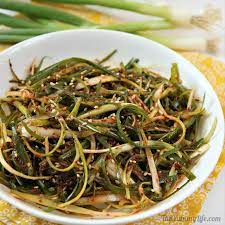

Green Onion Salad

Description:
A really great Korean dish that can be enjoyed on its own or paired with any meat!
Ingredients:
- 2 bunches of green onions
- 2 tbsp soy sauce
- 1 tbsp raw sugar
- 1 tbsp sesame oil
- 1 tbsp sesame seeds
- 2 tsp Korean chili flakes
- 1 tsp minced garlic
Tools Needed:
- knife
- korean onion cutter (or just use the knife, it just takes longer)
- cutting board
- bowl (hopefully with a lid)
Steps:
- mince garlic
- slice green onions thin along the stem with the cutter or a knife
- toss all ingredients together in a bowl then mix or shake with a lid on
- serve and enjoy!
(Back to top!)(Home!)